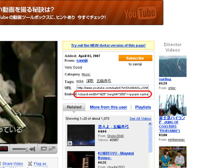
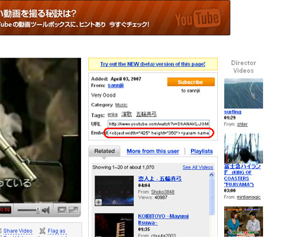
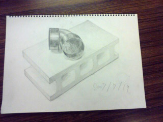
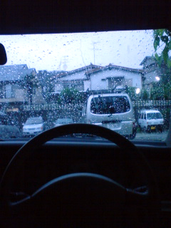
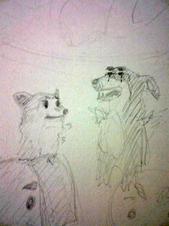
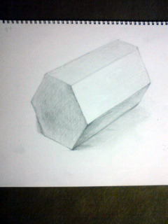

マイフェイバリットソング
ちっちゃい時から親父の車の中で
無限ループされてたこともあり、
かなりすんなり心に染みる。。。
【今更だが、youtube動画をブログに張る方法】

赤丸の部分をコピペするだけ～
とっても簡単♪
2007年07月26日
マイフェイバリットソング
ちっちゃい時から親父の車の中で
無限ループされてたこともあり、
かなりすんなり心に染みる。。。
【今更だが、youtube動画をブログに張る方法】

赤丸の部分をコピペするだけ～
とっても簡単♪
2007年07月20日

だいぶリアルに書けるようになってきた気がする！
細かいとこの精度を上げることが課題か！
2007年07月14日

ラシーン + 雨は何故かとっても寂しい気分になります。
寂しい気分になると色々思い出すわけで・・・・

どうしてこんなことになってしまったんだろうとか。
あ、散発行って丸刈りにしました！

結構素早くかけた！！
まだまだ甘いとこいっぱいありそうだけど。。
前面のコントラストなんかは結構良い具合に出来たんじゃないかと！
2007年07月11日
ブログ作って３ヶ月ぐらいでやっと
yahoo検索エンジンが見回りに来てインデックスされました。
googleはブログ作って１週間ぐらいで見回り来てくれてましたが！！
※ちなみにこちらから両検索エンジンには送信してません。
自然な流れでインデックスされるにはどんくらい掛かるんだろうって
テストしておりました。
ちなみに両者のインデックス記事数
yahoo→２件
google→３５件
明らかにgoogleの検索エンジンの方が優れている気がする。
SEOがもてはやされている昨今、
yahooの検索エンジン仕様にはホント悩まされますね。。
単純にyahoo検索エンジンがショボイだけとしか思えない。。
８月号
夏ですな！！
今月のは配色について特集。
配色によって変わる雰囲気ってデザインする人にとっては
是非把握しておかなければいけないっすね！
っていう私は把握できてません！！
こんな感じかなって？感覚攻め・・・
勉強しましょう！

光と影で球に見せるのが難しかったです。
なんとか球に見えるんでわないか！！
2007年07月05日
先週週末に買ったＣＤ
【UA】Golden green
かなりイイ！！間違いなくイイ！！
「昔のキャッチーなUAサウンド＞最近の難しすぎるUAサウンド」
な感じのバランスでとても聴きやすい。
ラストの１０曲目はとっても暖かいメロディー。
全体的にも「暖かいメロディー」的な印象。
こういうＵＡを待っていた！って人は即買いですな。
ライブ見に行かなくては！！
youtubeでUA出てる番組UPされてました。
http://www.youtube.com/watch?v=DGXfv4Oq6ms
UA-黄金の緑 (Golden green1曲目)
http://www.youtube.com/watch?v=cvRhCoyx-no&mode=related&search=
サウンドとメロディーが渋すぎる・・・
光の反射教えてもらったけど、
イマイチわからなかったです。
円柱を横にすると単純に難しい。
普通の直方体から数学的に書き出していきました。